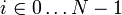

Assoziative Arrays
Contents
Datenstruktur-Dreieck für assoziative Arrays
Assoziative Arrays sind eine der wichtigsten Anwendungen für Suchalgorithmen und Suchbäume. Bevor wir dies im Detail erklären, wollen wir jedoch noch einmal einen Blick auf das Datenstruktur-Dreieck aus der ersten Vorlesung werfen, das am Beispiel der assoziativen Arrays sehr schön illustriert werden kann. Wir zeigen es hier noch einmal:

Wir erinnern daran, dass man zwei Ecken des Dreicks wählen muss, um eine Datenstruktur zu definieren. Wir werden im Folgenden zeigen, wie Python durch Festlegen der erlaubten Operationen und deren Bedeutung den abstrakten Datentyp "Assoziatives Array" definiert, wie durch Festlegen eines Speicherlayouts und der Bedeutung der gespeicherten Entitäten das Standard-Datenformat "JSON" definiert ist, und wie durch effiziente Implementation der festgelegten Operationen mit jeweils passendem Speicherlayout die Datenstruktur auf unterschiedliche Arten realisiert werden kann.
Definition des abstrakten Datentyps
Assoziative Arrays können genau wie gewöhnliche Arrays benutzt werden, sie unterstützen also den lesenden und schreibenden Zugriff über den Indexoperator a[...]. Im Unterschied zum gewöhnlichen Array, wo die Indizes ganze Zahlen im Bereich

sein muss, kann der Typ der Indizes jetzt beliebig sein. Wir verwenden dafür den Begriff "Schlüssel" (engl.: key):a[key] = value # Speichern des Wertes 'value' unter dem Schlüssel 'key' value = a[key] # Auslesen des unter dem Schlüssel 'key' gespeicherten Wertes
Eine typische Anwendung ist ein Wörterbuch
x = toEnglish['Baum'] # ergibt 'tree'
In diesem Fall ist der Typ des Schlüssels string. Dies ist in der Praxis der häufigste Fall, weshalb assoziative Arrays oft als Dictionary bezeichnet werden (so auch in Python, hier heißt der Typ dict). Im allgemeinen kann aber jeder Typ als Schlüssel benutzt werden, der eine der folgenden Anforderungen erfüllt:
| unterstützte Vergleichsoperationen für Schlüssel | mögliche Implementation des assoziativen Arrays |
|---|---|
| Identitätstest: key1 == key2 |
sequentielle Suche |
| Ordnungsrelation: key1 < key2 oder cmp(key1, key2) |
Suchbaum (auch binäre Suche, falls keine neuen Schlüssel eingefügt und keine gelöscht werden) |
| Identitätstest und Hashfunktion: key1 == key2 und hash(key1) == hash(key2) |
Hashtabelle |
Wenn über die Schlüssel mehr bekannt ist (eine Ordnungsrelation oder eine Hashfunktion statt einer bloßen Indentitätsprüfung), kann man entsprechend bessere Datenstrukturen (Suchbäume oder Hashtabellen statt sequentieller Suche) verwenden, deren Zugriffsfunktionen wesentlich effizienter sind (sequentielle Suche ist ja nur in O(N)).
Zu den beiden obigen Zugriffsfunktionen treten in Python noch drei weitere Funktionen hinzu: eine um zu testen, ob ein Schlüssel vorhanden ist, eine um einen Schlüssel und die darunter gespeicherten Daten zu löschen, sowie eine, die die Größe des Arrays (Anzahl der gespeicherten Schlüssel/Wert-Paare) zurückgibt:
if a.has_key(key): # Testen, ob Schlüssel 'key' existiert
del a[key] # Schlüssel 'key' und zugehörige Daten aus dem Array entfernen
print len(a) # Größe des Arrays ausgeben
Die Syntax der aufgeführten Funktionen gilt für die Benutzung eines assoziativen Arrays. Will man einen solchen Datentyp implementieren, muss man die entsprechende Funktionalität als Methoden der jeweiligen Klasse zur Verfügung stellen. Der Python-Interpreter transformiert den Index-/Schlüsselzugriff a[key] sowie die len- und del-Operatoren automatisch in Aufrufe der jeweiligen Methode, wie die folgende Tabelle verdeutlicht. Zur vollständigen Definition der Bedeutung der einzelnen Operationen (wie vom Datenstruktur-Dreieck gefordert) gehört außerdem die Spezifikation des Verhaltens im Fehlerfall (wenn z.B. ein angeforderter Schlüssel nicht existiert).
| Operation | von Python intern generierter Methodenaufruf | zu implementierende Methodensignatur | Bedeutung |
|---|---|---|---|
| a[key] = value | a.__setitem__(key, value) | def __setitem__(self, key, value): | * wenn key bereits existiert: ersetze die zugehörigen Daten durch value * wenn key noch nicht existiert: lege einen neuen Schlüssel an und speichere value als zugehörigeaten |
| value = a[key] | a.__getitem__(key) | def __getitem__(self, key): | * wenn key existiert: gebe die zugehörigen Daten zurück * wenn key nicht existiert: löse KeyError-Exception aus |
| a.has_key(key) | a.has_key(key) | def has_key(self, key): | gibt True zurück wenn key existiert, sonst False |
| del a[key] | a.__delitem__(key) | def __delitem__(self, key): | * wenn key existiert: entferne diesen Schlüssel und die zugehörigen Daten * wenn key nicht existiert: löse KeyError-Exception aus |
| len(a) | a.__len__() | def __len__(self): | gibt die Größe des Arrays zurück |
Aufgrund der Definition ist klar, das jeder Schlüssel nur einmal im Array vorkommen kann. Die Definition des Abstrakten Datentyps "assoziatives Array" erlaubt es uns, derartige Arrays auf verschiedenste Art zu implementieren, ohne dass sich an der Benutzung (also daran, wie man die Arrayfunktionalität später aufruft) irgend etwas ändert.
Das JSON-Datenformat
Die zweite Kante des Datenstruktur-Dreiecks ist das "Datenformat". Hier legt man Speicherlayout und Bedeutung fest. Ein Datenformat dient vor allem zum Speichern von Daten auf Festplatte und zum Austausch von Daten zwischen verschiedenen Programmen bzw. Internetseiten. Im Fall von assoziativen Arrays setzt sich dafür das JSON-Format immer mehr durch, weil es einfach und trotzdem mächtig ist. Es eignet sich sehr gut zum Speichern von assoziativen Arrays (also von Schlüssel/Wert Paaren) und unterstützt außerdem gewöhnliche Arrays und hierarchische Strukturen, weil die Werte wiederum (gewöhnliche oder assoziative) Arrays sein dürfen.
Das Speicherlayout einer JSON-Dateien ist definiert als eine Bytefolge, die als Zeichenfolge gemäß UTF-8-Standard interpretiert wird. Dies hat zwei Vorteile: einerseits ist das Format dadurch mit allen gängigen Systemen kompatibel und überall gleich, andererseits kann jedes JSON-File einfach in einem Texteditor geöffnet und editiert werden und ist für Menschen und Maschinen gleichermaßen leicht lesbar.
Die Zuordung einer Bedeutung zu einem gegebenen Speicherinhalt erfolgt in JSON mit Hilfe einer Grammatik. Ein JSON-File enthält entweder ein gewöhnliches Array oder ein assoziatives Array (Dictionary):
JSON_file := array
| dictionary
Ein gewöhnliches Array wird als Folge von einem oder mehreren Elementen geschrieben, die durch Komma getrennt und in eckigen Klammern eingeschlossen sind (Zeichen, die in der Grammatik in einfache Anführungszeichen eingeschlossen sind, müssen explizit im JSON-File stehen). Leere Arrays sind ebenfalls erlaubt:
array := '[' elements ']'
| '[' ']'
elements := value
| value ',' elements
Ein Dictionary wird in ähnlicher Weise als Folge von Schlüssel/Wert-Paaren geschrieben, die durch Komma getrennt und in geschweiften Klammern eingeschlossen sind. Leere Dictionaries sind erlaubt. Die Schlüssel müssen immer Strings sein, gefolgt von einem Doppelpunkt:
dictionary := '{' pairs '}'
| '{' '}'
pairs := string ':' value
| string ':' value ',' pairs
Strings sind Zeichenfolgen (inklusive einiger Sonderzeichen wie "\n" für einen Zeilenumbruch), die in doppelte Anführungszeichen eingeschlossen sind, oder der Leerstring:
string := '"' '"'
| '"'characters'"'
Werte können Zahlen (ganze oder reelle Zahlen, definiert wie in Python), Boolesche Werte ('true' oder 'false'), Strings oder 'null' sein. Außerdem können Arrays und Dictionaries wiederum als Werte verwendet werden, wodurch sich beliebig tief geschachtelte, hierarchische Datenstrukturen ergeben:
value := number | string | boolean | null | array | dictionary
Hier ist ein einfaches Beispiel für ein JSON-File, das Ausschnitte aus einer Studenten-Datenbank enthält:
{
"Müller, Friedrich" : {
"Mathematik" : 2.0,
"ALDA" : 1.3
},
"Weise, Anna" : {
"Mathematik" : 1.0,
"Philosophie": 1.3
}
}
Das JSON-Format ist syntaktisch der Sprache Python sehr nahe, und kann mit einigen verherigen Definitionen direkt durch die eval()-Funktion in ein Python-Dictionary oder -Array umgewandelt werden.
# don't do this - it is highly unsafe and dangerous
true, false, null = True, False, None # fehlende Konstanten defininieren
res = eval(file("test.json").read().decode("utf_8")) # File einlesen und als Python-Code ausführen
Dies sollte man jedoch auf keinen Fall tun, weil ein Hacker dadurch beliebigen Code ausführen könnte, den er vorher in das File 'test.json' eingeschmuggelt hat. Da die Funktion eval() nur prüft, ob der Ausdruck gültiges Python ist, aber nicht, ob das File gültiges JSON (also nur Daten, aber keinen ausführbaren Code) enthält, kann man dies nicht erkennen oder verhindern. Deshalb sollte man zum Einlesen von JSON stets das Python-Modul json verwenden, das ein manipuliertes File einfach zurückweisen würde:
# sicheres Einlesen und Konvertieren
import json
with open('test.json', encoding='utf-8') as f: # File im UTF-8 Format öffnen
res = json.load(f) # und als json einlesen
Implementation von assoziativen Array-Klassen
Die dritte Kante des Datenstruktur-Dreiecks bezieht sich schließlich auf die Realisierung der Datenstruktur als Klasse, indem man auf geeignet organisiertem Speicher die geforderten Operationen implementiert. In Python ist mit der Klasse dict eine sehr leistungsfähige Implementation eines assoziativen Arrays integraler Bestandteil der Sprache. Diese Implementation beruht auf dem Konzept der Hashtabellen, das wir in der Vorlesung später behandeln. Man benötigt dafür eine Funktion hash(key), die in Python für alle Standarddatentypen bereits implementiert ist. In diesem Abschnitt wollen wir zwei alternative Implementationen auf der Basis von sequentieller Suche und auf der Basis von Suchbäumen betrachten.
Realisierung durch sequentielle Suche
Wenn für die Schlüssel nur ein Identitätsvergleich
key1 == key2
definiert ist, hat man keine Möglichkeit, die Schlüsselsuche durch eine spezielle Datenstruktur zu beschleunigen. Man speichert die Schlüssel/Wert-Paare dann einfach in einem gewöhnlichen Array, das man sequentiell durchsucht. Dazu implementieren wir zunächst eine Hilfsklasse, die Schlüssel/Wert-Paare aufnimmt:
class KeyValuePair:
def __init__(self, key, value):
self.key = key
self.value = value
Die Arrayklasse speichert die Paare in einem Array self.data, dessen aktuelle Länge der Größe des assoziativen Arrays entspricht. Damit ist das Speicherlayout der Klasse festgelegt:
class SequentialSearchArray:
def __init__(self):
self.data = []
def __len__(self):
return len(self.data)
Um auf die Daten zugreifen zu können, müssen wir nach dem richtigen Schlüssel suchen. Dazu implementieren wir die Hilfsfunktion findKey, die den Index des Schlüssels zurückgibt, oder None, wenn der Schlüssel nicht existiert:
def findKey(self, key):
for k in xrange(len(self.data)):
if key == self.data[k].key:
return k
return None
Beim Einfügen eines Elements müssen wir zuerst prüfen, ob es den Schlüssel schon gibt, und dann entweder die daten überschreiben oder ein neues Element anfügen:
def __setitem__(self, key, value):
k = self.findKey(key)
if k is None:
self.data.append(KeyValuePair(key, value)) # neues Paar einfügen
else:
self.data[k].value = value # Daten ersetzen
Die Suche hingegen löst eine Exception aus, wenn der Schlüssel nicht gefunden wurde:
def __getitem__(self, key):
k = self.findKey(key)
if k is None:
raise KeyError(key) # Schlüssel nicht gefunden => Fehler
else:
return self.data[k].value # Schlüssel gefunden => Daten zurückgeben
Die übrigen geforderten Funktionen sind ebenso einfach zu implementieren:
def has_key(self, key):
return (self.findKey(key) is not None)
def __delitem__(self, key):
k = self.findKey(key)
if k is None:
raise KeyError(key) # Schlüssel nicht gefunden => Fehler
else:
del self.data[k] # Schlüssel gefunden => löschen
Wegen der sequentiellen Suche hat der Zugriff auf ein Element in dieser Datenstruktur die Komplexität O(len(a)).
Realisierung als Suchbaum
Wenn für den Schlüsseltyp des assoziativen Arrays eine Ordnung definiert ist (wenn also key1 < key2 oder cmp(key1, key2) unterstützt werden), kann man das Indexierungsproblem auf das Suchproblem zurückführen. Dann kann das assoziative Array effizient als selbst-balancierender Suchbaum imlementiert werden, so dass die Zugriffsfunktionen nur noch eine Komplexität in O(log(len(a))) haben. Die Datenstruktur des Suchbaums muss dafür so erweitert werden, dass zu jedem Schlüssel auch die zugehörigen Daten gespeichert werden. Man erweitert die Node-Klasse deshalb um ein Feld "value":
class Node:
def __init__(self, key, value):
self.key = key
self.data = value
self.left = self.right = None
Dann kann man eine Klasse TreeSearchArray realisieren, deren Konstruktor einen leeren Suchbaum initialisiert:
class TreeSearchArray:
def __init__(self):
self.root = None
self.size = 0
def __len__(self):
return self.size
Die Funktion __setitem__ schaut nach, ob ein Eintrag mit dem betreffenden Schlüssel bereits existiert. Wenn ja, werden seine Daten mit den neuen Daten überschrieben, andernfalls wird ein neuer Eintrag angelegt. Intern werden dazu die bereits bekannten Funktionen treeSearch und treeInsert verwendet (siehe Abschnitt Suchbäume):
def __setitem__(self, key, value):
node = treeSearch(self.root, key)
if node is None:
self.root = treeInsert(self.root, key)
self.size += 1
node = treeSearch(self.root, key)
node.value = value
(Eine geschicktere Implementation würde natürlich den zweiten Aufruf von treeSearch eliminieren und das Setzen der Daten gleich in treeInsert erledigen. Dies ändert aber nichts an der Komplexität der Funktion.) Die Funktion __getitem__ sucht ebenfalls einen Eintrag mit dem gegebenen Schlüssel. Wenn er gefunden wird, gibt sie die zugehörigen Daten zurück, andernfalls eine Fehlermeldung:
def __getitem__(self, key):
node = treeSearch(self.root, key)
if node is None:
raise KeyError(key)
else:
return node.value
Die Indexoperationen haben bei der Realisierung mit Baumsuche eine Komplexität in O(log n).
Ein wichtiges Beispiel für ein assoziatives Array, das auf diese Weise realisiert wurde, ist die C++ Standardklasse std::map.